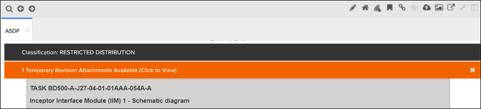

Les classifications de sécurité sont une bannière qui s'affiche au même endroit que les suppléments et les bannières de révisions temporaires.
La langue affichée dans le bandeau de sécurité est définie par un mappage des codes de langue du module de données à une langue spécifique dans le kit de style. Le kit de style est sélectionné lors de la configuration d'une activité de publication.
Par conséquent, langue de la bannière de sécurité affichée dans la bannière ne dépend pas d'une langue sélectionnée par l'utilisateur final de Pinpoint. La sélection du français n'a pas d'incidence sur la langue affichée dans la bannière de sécurité. Reportez-vous à l'exemple ci-dessous :

Bannière des classifications de sécurité